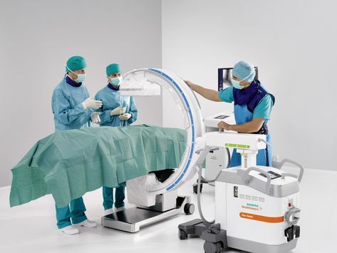

Achievements
- Awarded Best Regional Hospital 2023
- Over 10,000 Successful Surgeries
- Accredited for Advanced Medical Research
- 24/7 Emergency Care Services Launched
- Introduced Robotic-Assisted Surgery Program
- Opened State-of-the-Art Cancer Center
- Certified for Excellence in Patient Safety
- Top-Ranked Hospital for Patient Satisfaction
- Recognized Leader in Cardiac Care
Doctors
- Cardiologist
- Neurologist
- Orthopedic Surgeon
- Pediatrician
- DGeneral Surgeon
- General Surgeon
- Oncologist
- Obstetrician-Gynecologist
- Gastroenterologist
Services

- Cardiology Consultations and Treatments
- Neurological Diagnostics and Therapies
- Orthopedic Surgery and Rehabilitation
- Pediatric Care and Vaccinations
- General Surgery and Minimally Invasive Procedures
- Dermatology Treatments and Skin Care
- Oncology: Cancer Diagnosis and Treatment
- Maternity and Obstetric Services
- Gastroenterology Endoscopy and Treatment